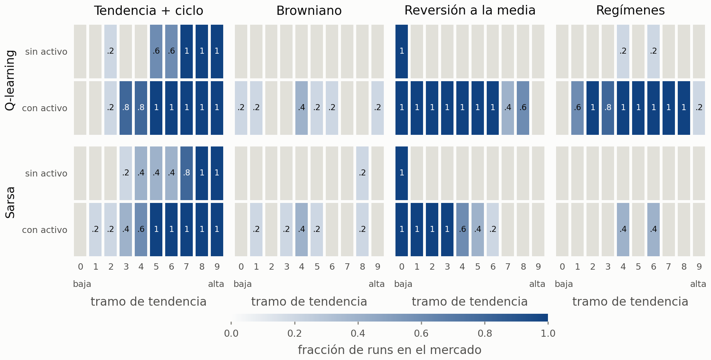
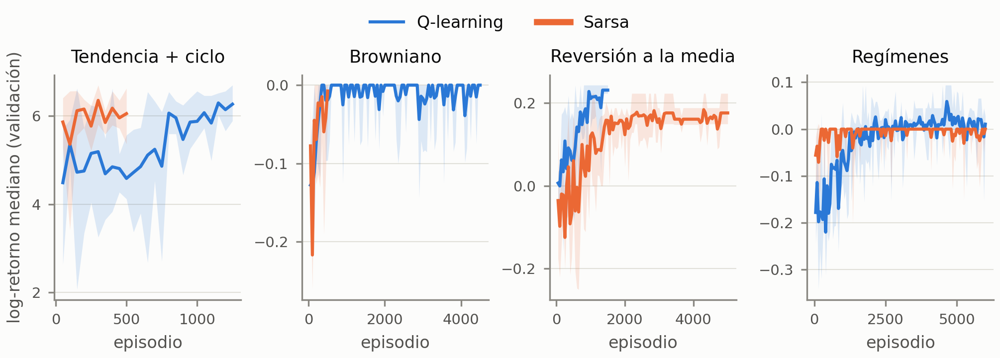
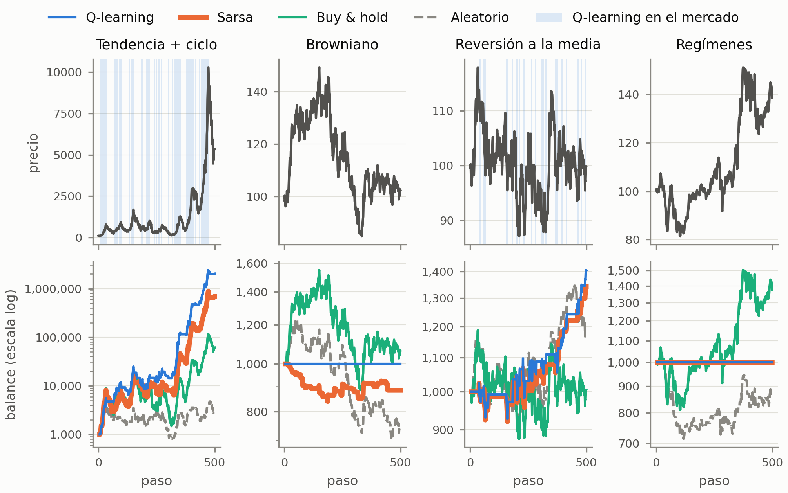

Agentes tabulares de aprendizaje por refuerzo para invertir en un activo: Q-learning y Sarsa
Aprendizaje por Refuerzo, MIAX-14 · Taller trader · Grupo: Alonso, Piettro y Raúl · Código y resultados: github.com/raulrodriguezlr/B5-Reinforcement-learning
1. Planteamiento y decisiones de diseño
Entorno. Se usa SimpleTradingEnv del enunciado sin cambios: acciones vender, mantener y comprar; recompensa igual al retorno del paso si se tiene el activo, menos 0,1 % por operación; capital inicial 1000. Cada episodio recorre 494 pasos de una serie de 500 precios.
Estado discreto. La tendencia observada es continua y, medida sobre series reales de cada generador, vive en torno a ±0,06 (±0,35 en tendencia + ciclo): el recorte a ±1 del entorno nunca actúa y diez tramos uniformes en [−1, 1] dejarían casi todos los estados en un único tramo. Por eso se discretiza en 10 tramos por cuantiles, ajustados para cada generador con 200 series propias (nunca de test). El estado es (tramo, posición) y la tabla Q tiene forma 10×2×3.
Entrenamiento. Cada episodio usa una serie nueva del mismo generador. Política ε-greedy con ε decreciente de 1 hasta un mínimo εmin y α decreciente (×0,998 por episodio, mínimo 0,01): con α constante la política greedy seguía cambiando en casi todos los episodios por valores Q casi empatados.
Datos y ajuste. Semillas disjuntas para entrenamiento, validación (50 series) y test (100 series). Hiperparámetros elegidos solo en validación (mediana del log-retorno de la política greedy) con la rejilla α ∈ {0,05; 0,2}, γ ∈ {0; 0,9; 0,99}, decaimiento de ε ∈ {0,995; 0,999} y 3 semillas. Gana γ = 0,9 en tendencia + ciclo y γ = 0,99 en reversión; en browniano y regímenes casi todo empata en “no operar”. Después, en torno a ese óptimo (un factor cada vez), se barre εmin ∈ {0; 0,05; 0,2} y el número de episodios (hasta 6000, validación cada 250, 5 semillas; como α y ε decaen por episodio, cada punto equivale a entrenar N episodios). Se elige el εmin de mejor meseta (0,05 si empata) y el primer N que queda en tolerancia de ella.
Evaluación. 5 semillas por algoritmo; política greedy final sobre las mismas 100 series de test que los baselines (aleatorio, buy & hold). Medianas por serie, porque el generador 1 da balances muy asimétricos. Convergencia, con dos criterios fijados una vez para todos: (val) primer episodio desde el que el rendimiento en validación queda en tolerancia del valor final durante al menos 200 episodios; (MA) primer episodio desde el que la media móvil de 100 episodios de la recompensa de entrenamiento queda a menos de 3 errores estándar de su valor final (tolerancia 0,3·std).
2. Resultados en test
Generador
Método
Episod. / εmin
Balance
Log-ret. ± std
Exc. B&H (pp)
Sharpe
DD (%)
Oper.
% merc.
Conv. val (ep.)
Conv. MA (ep.)
Conv. MA (s)
Tendencia + ciclo
Q-learning
1250 / 0,05
512 096
6,32 ± 0,31
35 111,9
0,194
61,3
55
59,5
n/c (0/5)
950 (5/5)
19,9
Sarsa
500 / 0,05
366 888
6,00 ± 0,23
25 784,1
0,193
61,0
60
54,7
n/c (0/5)
337 (5/5)
6,2
Buy & hold
n/c
33 458
3,61
0,0
0,120
89,2
1
100,0
n/c
n/c
n/c
Aleatorio
n/c
4 568
1,60
−2 613,1
0,078
78,3
166
49,0
n/c
n/c
n/c
Browniano
Q-learning
4500 / 0,05
1 000
0,00 ± 0,00
1,1
0,000
0,0
0
0,0
3974 (4/5)
589 (5/5)
11,4
Sarsa
500 / 0
1 000
−0,02 ± 0,04
−0,3
0,000
0,0
0
0,0
299 (1/5)
299 (5/5)
7,4
Buy & hold
n/c
989
−0,01
0,0
0,009
37,7
1
100,0
n/c
n/c
n/c
Aleatorio
n/c
809
−0,17
−15,9
−0,024
32,2
166
49,0
n/c
n/c
n/c
Reversión a la media
Q-learning
1500 / 0
1 289
0,25 ± 0,02
28,7
0,048
16,3
34
33,6
886 (4/5)
984 (5/5)
21,6
Sarsa
5000 / 0
1 215
0,18 ± 0,04
20,2
0,045
14,3
42
20,5
4449 (5/5)
3658 (5/5)
85,3
Buy & hold
n/c
994
−0,00
0,0
0,010
25,5
1
100,0
n/c
n/c
n/c
Aleatorio
n/c
872
−0,14
−13,9
−0,013
30,8
166
49,0
n/c
n/c
n/c
Regímenes
Q-learning
6000 / 0
1 000
0,01 ± 0,03
14,1
0,000
0,0
0
0,0
5699 (2/5)
4044 (5/5)
86,3
Sarsa
6000 / 0,05
1 000
0,00 ± 0,00
12,6
0,000
0,0
0
0,0
4516 (3/5)
530 (5/5)
12,1
Buy & hold
n/c
874
−0,16
0,0
−0,007
43,4
1
100,0
n/c
n/c
n/c
Aleatorio
n/c
767
−0,26
−8,7
−0,033
35,1
166
49,0
n/c
n/c
n/c
Tabla 1. 100 series de test por generador (agentes: 5 semillas). Medianas por serie, salvo el log-retorno (media ± desviación entre semillas). Episod.: N elegido en validación. Conv. val y Conv. MA: episodio medio de las semillas que convergen (convergidas/total) según validación greedy o media móvil de la recompensa de entrenamiento; n/c, sin convergencia en N episodios. Conv. MA (s): segundos de entrenamiento hasta ese episodio, con los cuatro generadores a la vez (unos 20 ms por episodio, el doble que en solitario).

Figura 1. Política greedy final: fracción de las 5 semillas cuya acción deja la cartera dentro del mercado, por tramo de tendencia (0 la más baja) y posición actual. Gris: ninguna semilla entra.
3. Análisis por generador: ¿es la estrategia esperada?
Tendencia + ciclo: seguimiento de tendencia, esperado. El agente entra con tendencia alta y sale con tendencia negativa (figuras 1 y 3). Multiplica el log-retorno de buy & hold (6,3 y 6,0 frente a 3,6) con menos drawdown (61 % frente a 89 %). El resultado es tan bueno porque el ciclo es determinista: sin(t) tiene la misma fase en todas las series (periodo de unos 63 pasos) y la tendencia de 6 pasos revela en qué tramo del ciclo se está. Es un patrón aprendible en este simulador, no una propiedad de un mercado real.
Browniano: no operar, esperado. Con incrementos independientes la tendencia no contiene información sobre el retorno siguiente, así que ninguna política puede batir en esperanza a buy & hold, y la comisión hace que operar sea negativo. Ambos agentes aprenden a quedarse en efectivo: igualan a buy & hold en mediana (+1,1 y −0,3 pp) con drawdown nulo. Responde a la pregunta abierta de clase: con precios aleatorios y costes, lo óptimo es no operar.
Reversión a la media: estrategia contraria, esperada. Compra solo en el tramo de tendencia más negativo y mantiene hasta que la tendencia se vuelve positiva. La asimetría entre entrar (solo en el tramo 0) y salir (Q-learning desde el tramo 7, Sarsa desde el 4) es una banda de histéresis que ahorra comisiones. Supera a buy & hold en 20 a 29 pp. Q-learning rinde más (log-retorno 0,25 frente a 0,18); Sarsa es más selectivo (21 % del tiempo en mercado frente a 34 %) con menor drawdown.
Regímenes: seguimiento de tendencia solo parcial. Lo esperado es estar dentro en régimen alcista y fuera en bajista. En la serie mediana ninguno opera: Q-learning entra solo en algunas semillas y, una vez dentro, mantiene casi siempre. Ambos superan a buy & hold (que pierde un 16 % en mediana porque el régimen bajista tiene más caída y volatilidad), pero sobre todo por evitar el mercado: una ventana de 6 pasos distingue mal el régimen oculto en un ruido del 1 al 2,5 % por paso.

Figura 2. Mediana del log-retorno en validación de la política greedy durante el barrido de εmin y N (cada 250 episodios; εmin elegido): media de 5 semillas y banda entre mínimo y máximo.
4. Q-learning frente a Sarsa, εmin y convergencia
El rendimiento es similar salvo en reversión, donde Q-learning rinde más. Sarsa es más conservador (menos tiempo en mercado en reversión y ninguna operación en regímenes), como predice la teoría: al ser on-policy evalúa la política ε-greedy con exploración (ejemplo del acantilado), mientras que Q-learning evalúa la greedy. εmin: con 0,2 la recompensa online empeora en los 8 casos y la política greedy nunca mejora en validación; 0 gana en reversión (ambos), en regímenes (Q-learning) y en browniano (Sarsa), y 0,05 en el resto. Explorar de forma permanente no compensa en generadores estacionarios (en un mercado no estacionario podría hacerlo). Número de episodios: la meseta llega en 500 a 1500 episodios en tendencia + ciclo y en reversión (Q-learning); Sarsa en reversión necesita 5000 (decaimiento de ε lento) y en regímenes ambos llegan al tope de 6000 sin meseta clara; en browniano, donde el óptimo es no operar, el N elegido sigue el ruido. Según la media móvil (Conv. MA) las 40 ejecuciones convergen, sin un orden consistente entre algoritmos; el criterio en validación greedy, más estricto, a menudo no se cumple en N episodios porque la política oscila en celdas con valores Q casi empatados.

Figura 3. Una serie de test por generador: precio con sombreado donde Q-learning tiene el activo (arriba) y balance en escala logarítmica de cada método (abajo).
5. Extensiones
Generador
Q-learning
Sarsa
MC on-policy
MC off-policy
Q-learning mixto
Sarsa mixto
Buy & hold
Tendencia + ciclo
6,32 ± 0,31
6,00 ± 0,23
6,20 ± 0,33
2,77 ± 1,39
6,01 ± 0,23
6,00 ± 0,24
3,61
Browniano
0,00 ± 0,00
−0,02 ± 0,04
0,00 ± 0,00
−0,06 ± 0,09
−0,11 ± 0,05
−0,11 ± 0,03
−0,01
Reversión a la media
0,25 ± 0,02
0,18 ± 0,04
0,07 ± 0,07
−0,07 ± 0,17
−0,19 ± 0,06
−0,21 ± 0,09
−0,00
Regímenes
0,01 ± 0,03
0,00 ± 0,00
−0,03 ± 0,06
−0,19 ± 0,07
−0,18 ± 0,03
−0,18 ± 0,01
−0,16
Tabla 2. Log-retorno medio en test (± desviación entre semillas). MC reutiliza los hiperparámetros de Q-learning (6000 episodios); el mixto usa los valores por defecto (8000 episodios, un discretizador común). Ninguno tiene ajuste propio.
Generador
Método
5 tramos
10 tramos
20 tramos
comisión 0 %
comisión 0,1 %
comisión 0,5 %
Tendencia + ciclo
Q−learning
5,89 ± 0,59
6,32 ± 0,31
6,35 ± 0,17
6,46 ± 0,37 (45)
6,32 ± 0,31 (55)
6,20 ± 0,30 (43)
Sarsa
5,82 ± 0,32
6,00 ± 0,23
6,27 ± 0,19
6,23 ± 0,25 (67)
6,00 ± 0,23 (60)
6,11 ± 0,33 (50)
Browniano
Q−learning
−0,03 ± 0,07
0,00 ± 0,00
−0,02 ± 0,03
0,00 ± 0,01 (0)
0,00 ± 0,00 (0)
0,00 ± 0,00 (0)
Sarsa
−0,02 ± 0,05
−0,02 ± 0,04
−0,01 ± 0,03
0,00 ± 0,01 (0)
−0,02 ± 0,04 (0)
0,00 ± 0,00 (0)
Reversión a la media
Q−learning
0,15 ± 0,13
0,25 ± 0,02
0,22 ± 0,02
0,13 ± 0,07 (75)
0,25 ± 0,02 (34)
0,13 ± 0,07 (27)
Sarsa
0,12 ± 0,10
0,18 ± 0,04
0,16 ± 0,03
0,18 ± 0,03 (52)
0,18 ± 0,04 (42)
0,02 ± 0,00 (1)
Regímenes
Q−learning
0,00 ± 0,00
0,01 ± 0,03
0,05 ± 0,02
0,03 ± 0,04 (0)
0,01 ± 0,03 (0)
0,00 ± 0,00 (0)
Sarsa
0,00 ± 0,00
0,00 ± 0,00
0,00 ± 0,00
0,00 ± 0,00 (0)
0,00 ± 0,00 (0)
0,00 ± 0,00 (0)
Tabla 3. Log-retorno medio en test según tramos (comisión 0,1 %) y según comisión (10 tramos; entre paréntesis, operaciones por serie). Hiperparámetros ajustados para 10 tramos y 0,1 %.
Monte Carlo. El on-policy (first-visit) iguala a Q-learning cuando la señal es grande (6,20 frente a 6,32 en tendencia + ciclo) pero rinde menos en reversión (0,07 frente a 0,25): usa retornos de episodio completo, de mucha varianza. El off-policy con importancia ponderada es el peor en los cuatro: en episodios de 494 pasos el peso se degrada y solo la cola de cada episodio actualiza Q.
Entrenamiento mixto. Solo funciona en tendencia + ciclo (6,01). En los otros tres pierde (−0,11 a −0,21) y opera unas 90 veces: con el mismo estado, seguir la tendencia (tendencia + ciclo) y operar a la contra (reversión) piden acciones opuestas, y la observación no identifica el generador.
Número de tramos. Con 5 el rendimiento baja y las semillas divergen más (reversión 0,15 ± 0,13); con 20 es similar a 10 dentro de la dispersión, así que 10 basta.
Comisión. Con 0,5 % Sarsa deja de operar en reversión (0,02) y Q-learning recorta a 27 operaciones (0,13). Sin comisión no mejora: opera más (75) y rinde 0,13 frente a 0,25, así que la comisión del enunciado actúa también como regularizador (banda de histéresis).
6. Análisis crítico y limitaciones
El estado (tendencia de 6 pasos, posición) no es markoviano: en regímenes el régimen está oculto y en reversión no se observa la distancia al equilibrio; ampliarlo (p. ej. desviación respecto a una media larga) es la mejora más directa.
El generador 1 premia un ciclo de fase fija que no existe en series reales: los resultados no son trasladables a mercado (habría además sesgo de supervivencia y otros costes).
El ajuste usa la meseta en validación con 3 semillas (rejilla) y 5 (barrido): es ruidoso, y en browniano y regímenes no discrimina. El barrido varía un factor cada vez y no capta interacciones entre εmin, α y el decaimiento de ε; en regímenes N llega al tope de 6000.
Pendiente: una serie real (con sesgo de supervivencia), normalizar la tendencia por volatilidad en el entrenamiento mixto y ajustar Monte Carlo y las variantes de comisión.
7. Conclusiones
Con un estado mínimo (tendencia discretizada y posición), Q-learning y Sarsa aprenden en cada mercado la estrategia que su generador hace razonable: seguir la tendencia cuando hay ciclo, operar a la contra cuando hay reversión y no operar cuando no hay información. Superan siempre al aleatorio y a buy & hold salvo en el browniano, donde empatan con mucho menos riesgo. Las diferencias entre algoritmos son sobre todo de prudencia, y la principal limitación es la información del estado, no el algoritmo.